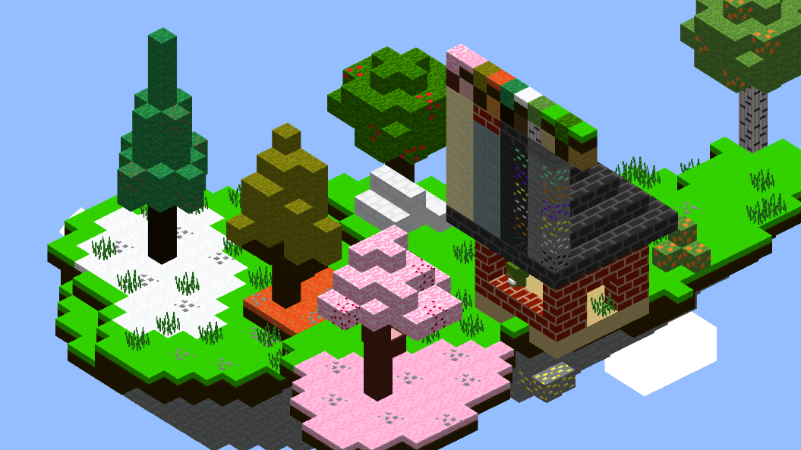
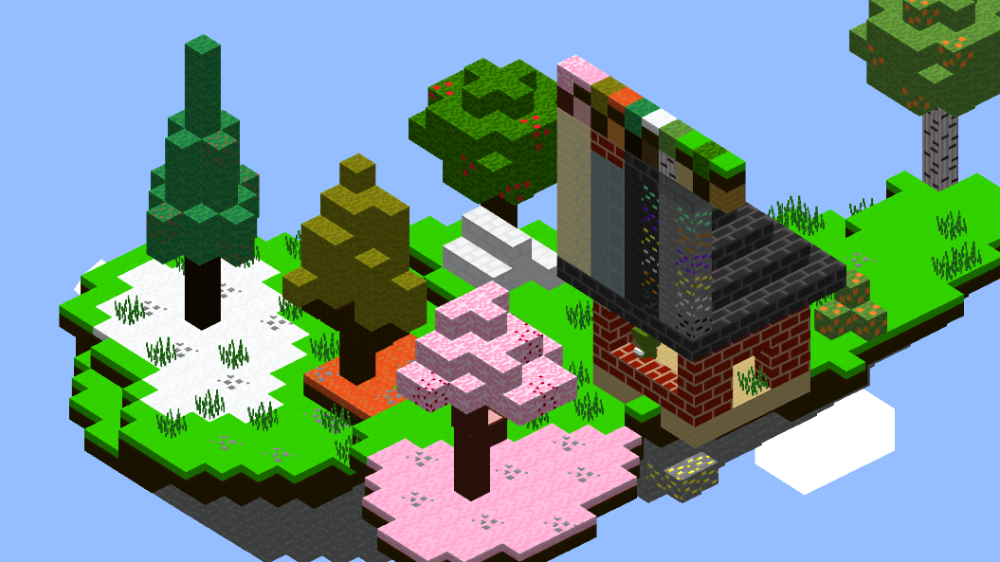

Cubie
This game was made for the first Brackeys 2021 Game Jam in just under a week. During this time I learned a lot about procedural generation and more primitive geometric processes such as mesh generation and UV texturing. The influence was a combination of the style of Minecraft, with a top-down orthographic world management sim idea. Due to the time constraints the project was left incomplete however I feel the product nonetheless was a great demo and learning experience as it taught me a lot in such a short amount of time.

 
